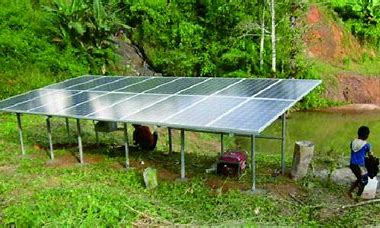
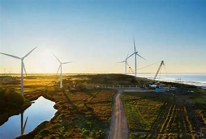
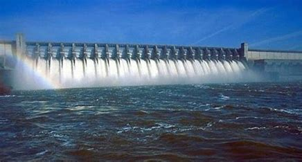

Energi Surya
Energi surya adalah energi yang berupa sinar dan panas yang berasal dari matahar. Energi ini dapat dimanfaatkan dengan secara langsung atau diubah menjadi bentuk energi lain. Energi surya merupakan sumber energi yang besar dan tidak akan habis. Energi surya juga tidak menimbulkan gas rumah kaca. Energi surya dapat dimanfaatkan dengan menggunakan teknologi seperti pemanas surya, fotovoltaik surya, listrik panas surya, arsitektur surya, dan fotosintesis buatan.

Keuntungan energi surya:
- Tidak menghasilkan emisi karbon
- Murah dalam jangka panjang
- Mengurangi ketergantungan pada bahan bakar fosil
- Energi surya tidak akan habis
- Ramah lingkungan karena tidak memengaruhi perubahan iklim seperti kasus penggunaan bahan bakar fosil.
Hal ini disebabkan panel surya tidak menghasilkan gas rumah kaca seperti karbon dioksida.
- Pemakaian panel surya memanfaatkan energi matahari sebagai sumber energi utama yang paling melimpah untuk diubah menjadi listrik
- Panel surya dapat dipasang sesuai dengan kebutuhan.
Proyek Energi Surya Terbaru

Proyek ini mencakup instalasi panel surya di gedung perkantoran besar, menghasilkan energi bersih yang cukup untuk menyuplai listrik seluruh gedung.

Proyek ini adalah pembangkit listrik tenaga surya skala besar di daerah pedesaan, menyediakan listrik bagi komunitas setempat dan mengurangi kebutuhan akan bahan bakar fosil.
Komentar
Energi Angin
Energi angin adalah energi yang dihasilkan dari gerakan udara yang terjadi karena perbedaan tekanan udara di permukaan bumi. Energi angin merupakan sumber energi yang dapat diperbaharui, bersih, dan tidak menimbulkan efek rumah kaca. Energi angin dapat diubah menjadi energi mekanik atau listrik dengan menggunakan peralatan seperti perahu layar atau turbin angin. Di Indonesia, pembangkit listrik yang memanfaatkan energi angin disebut Pembangkit Listrik Tenaga Bayu (PLTB).

Keuntungan energi angin:
- Bebas emisi
- Renewable dan berkelanjutan
- Memiliki potensi besar
- Tidak menghasilkan polusi
- Membantu mengurangi emisi gas rumah kaca di Indonesia dengan menggantikan pembangkit listrik yang menggunakan bahan bakar fosil seperti batu bara dan minyak bumi.
- Sumber energi angin sangat potensial dikembangkan di Indonesia karena murah, ramah lingkungan dan ketersediaannya berkelanjutan.
Proyek Energi Angin Terbaru

Proyek ini mencakup pembangunan turbin angin offshore yang menghasilkan energi bersih dan berkontribusi pada diversifikasi energi di wilayah pesisir.

Proyek ini adalah investasi dalam turbin angin darat yang lebih efisien, membantu mencapai target energi terbarukan di tingkat nasional.
Komentar
Energi Hidro
Hydropower adalah suatu energi alternatif untuk menghasilkan daya listrik dengan memanfaatkan air untuk menyalakan mesin1. Ketika air yang mengalir ditangkap dan diubah menjadi listrik, itu disebut tenaga air. Dengan hadirnya energi pembaruan ini, suatu negara dapat memenuhi kehidupan dalam jangka panjang dengan memanfaatkan sejumlah bendungan diberbagai titik daerah.

Keuntungan energi hidro:
- Tidak menghasilkan emisi karbon
- Stabil dan dapat diandalkan
- Memiliki potensi tinggi
- Ramah lingkungan
- Stabilitas energi
- Bisa diperbaharui
Proyek Energi Hidro Terbaru

Proyek ini mencakup pembangunan pembangkit listrik tenaga air terjun baru yang memanfaatkan aliran air gunung untuk menghasilkan listrik.

Proyek ini adalah rencana pembangunan sebuah bendungan besar yang akan menciptakan sumber energi hidro yang berkelanjutan.
Komentar
Energi Hidro
Energi hidro adalah energi yang dihasilkan dari air, seperti tenaga air terjun dan tenaga pasang surut. Ini adalah sumber energi terbarukan yang dapat diandalkan.
Keuntungan energi hidro:
- Tidak menghasilkan emisi karbon
- Stabil dan dapat diandalkan
- Memiliki potensi tinggi
Proyek Energi Hidro Terbaru
Proyek ini mencakup pembangunan pembangkit listrik tenaga air terjun baru yang memanfaatkan aliran air gunung untuk menghasilkan listrik.
Proyek ini adalah rencana pembangunan sebuah bendungan besar yang akan menciptakan sumber energi hidro yang berkelanjutan.
Komentar
Kembali ke Atas